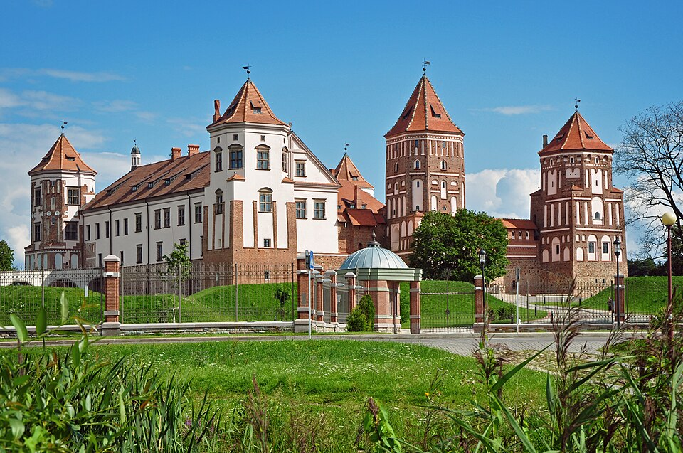
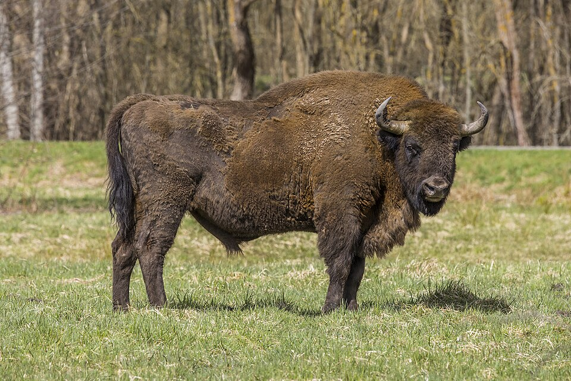
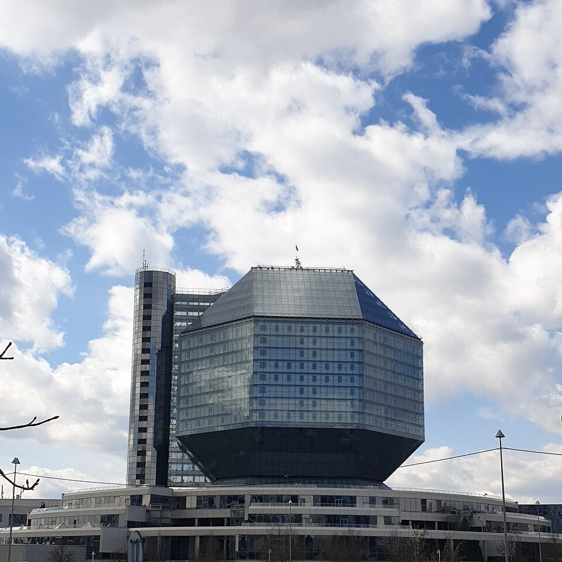
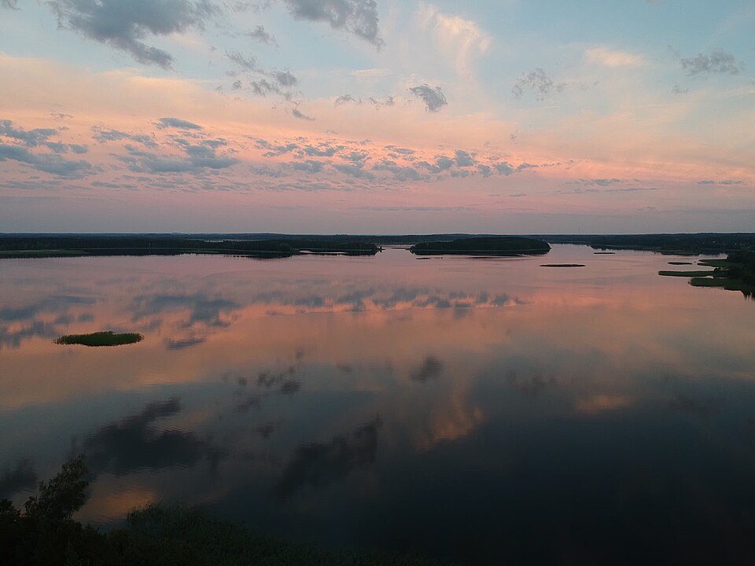

Belarus벨라루스 Беларусь
산림과 습지, 완만한 평원이 넓은 동유럽 내륙국
- Capital
- 민스크 (Мінск)
- Language
- 벨라루스어
- Currency
- 벨라루스 루블 (BYN)

미르 성Mir Castle
벨라베자 숲의 유럽들소European bison, Białowieża Forest
민스크 국립도서관National Library of Belarus, Minsk
브라슬라우 호수Braslaw LakesExplore Belarus
벨라루스 더 알아보기
벨라루스는 폴란드·리투아니아·라트비아·러시아·우크라이나와 접하며 산림과 습지, 호수, 완만한 평원이 넓은 동유럽의 내륙국이다. 중세 폴라츠크 공국과 리투아니아 대공국, 폴란드-리투아니아 연방의 역사부터 소비에트 시대 산업화까지 여러 정치체제를 거쳤다. 미르성과 네스비시, 벨라베자 원시림 등 문화·자연유산이 많으며 벨라루스어·러시아어가 공존한다. 현재 정치·인권 환경과 러시아의 우크라이나 전쟁 관여에 따른 국제 제재는 산업과 여행 정보를 이해하는 데 필수적인 맥락이다.
Latest updates
벨라루스 최근 뉴스
-
올레시키 주민 대피 이어져…벨라루스에 착륙한 비행기 4대, 루마니아 여론은 비관적
키이우인디펜던트에 따르면 10월 31일 러시아 점령지 올레시키에서 나온 대피민을 태운 비행기 4대가 벨라루스에 착륙했고, 대피민은 이후 우크라이나 통제 지역으로 이동했습니다. 한 자원봉사자는 러시아가 합의된 조건 밖으로 주민을 옮겼다고 주장했습니다.
-
루마니아 F-16, 영공 침범 러시아 제트 드론 2기 격추…젤렌스키 “벨라루스發 미사일 위협 커질 것”
루마니아 국방부는 10월 17일 저녁 흑해 쪽에서 영공에 들어온 드론 2기를 F-16 전투기가 술리나 남동쪽 약 20km 해상 상공에서 격추했다고 밝혔습니다. 국방부는 러시아가 우크라이나 공격에 쓰는 ‘게란’ 계열 제트 드론이라고 설명했습니다.
원문 국제뉴스 – 루마니아, 흑해 상공서 드론 2대 격추 외 3건
-
트럼프 ‘에너지 휴전’ 엿새 만에 무력화…러시아, 폴란드 접경 우크라이나 서부 대규모 공습
트럼프 대통령은 10월 11일 러시아와 우크라이나가 에너지 부문 휴전에 합의했다고 발표했습니다. 그러나 적용 범위와 기간은 공개되지 않았고 러시아의 공식 동의도 확인되지 않았습니다. 발표 직후에도 하르키우와 키이우의 발전소가 공격을 받았습니다.